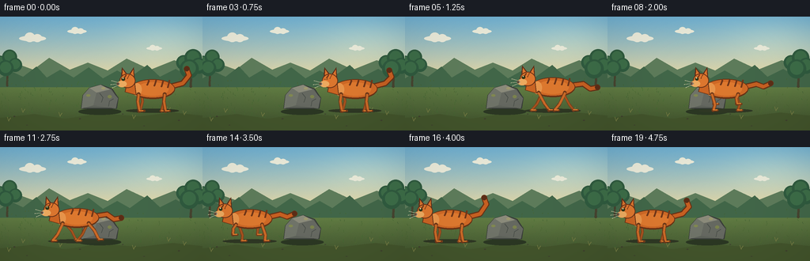
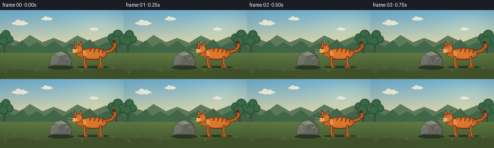

CODING AGENTS AS PIXEL WORLD MODELS
traex/GPT-5.6-Sol · dynamic_spatial_relationship_0009
点击播放 · 原生 RGB 像素
逐轮保存的候选
回放视频、检查图与代码变化。
每份候选均可单独播放。实际图片检查记录在下方工具轨迹中。
候选 01播放与检查图
点击播放 · 原生 RGB 像素


展开代码变化
--- 上一保存版本
+++ 本次保存版本
@@ -0,0 +1,234 @@
+from pathlib import Path
+import math
+import numpy as np
+from PIL import Image, ImageDraw, ImageFilter
+import artifact_io
+
+# Procedural, deterministic 3x supersampled animation.
+W, H, N = 256, 144, 20
+S = 3
+rng = np.random.default_rng(42)
+
+def sc(v): return int(round(v*S))
+def pts(seq): return [(sc(x), sc(y)) for x,y in seq]
+
+def ellipse(d, box, fill, outline=None, width=1):
+ d.ellipse(tuple(sc(v) for v in box), fill=fill, outline=outline, width=sc(width) if outline else 1)
+def polygon(d, xy, fill, outline=None, width=1):
+ d.polygon(pts(xy), fill=fill)
+ if outline:
+ d.line(pts(list(xy)+[xy[0]]), fill=outline, width=sc(width), joint='curve')
+def line(d, xy, fill, width=1):
+ d.line(pts(xy), fill=fill, width=sc(width), joint='curve')
+ r=width/2
+ # rounded line caps
+ for x,y in (xy[0],xy[-1]): ellipse(d,(x-r,y-r,x+r,y+r),fill)
+
+def make_background():
+ # Soft late-afternoon sky and meadow, with tiny film grain.
+ h,w=H*S,W*S
+ a=np.zeros((h,w,3),dtype=np.float32)
+ sky_top=np.array([113,177,210]); sky_low=np.array([232,216,163])
+ grass_top=np.array([104,133,72]); grass_low=np.array([60,78,43])
+ for y in range(h):
+ yy=y/S
+ if yy<78:
+ t=(yy/78)**1.15
+ a[y,:,:]=sky_top*(1-t)+sky_low*t
+ else:
+ t=(yy-78)/(H-78)
+ a[y,:,:]=grass_top*(1-t)+grass_low*t
+ # subtle sun glow
+ yy,xx=np.mgrid[0:h,0:w]
+ glow=np.exp(-(((xx/S-212)/65)**2+((yy/S-29)/34)**2))*25
+ a[:,:,:]+=glow[:,:,None]*np.array([1,.72,.28])
+ noise=rng.normal(0,0.7,(h,w,1))
+ a=np.clip(a+noise,0,255).astype(np.uint8)
+ im=Image.fromarray(a,'RGB')
+ d=ImageDraw.Draw(im)
+ # Clouds, kept subtle and distant.
+ for bx,by,sz in [(24,24,1.0),(85,16,.72),(185,38,.58)]:
+ col=(235,235,218)
+ ellipse(d,(bx,by,bx+34*sz,by+7*sz),col)
+ ellipse(d,(bx+7*sz,by-4*sz,bx+20*sz,by+8*sz),col)
+ ellipse(d,(bx+17*sz,by-2*sz,bx+29*sz,by+8*sz),col)
+ # Layered distant tree line and hills.
+ polygon(d,[(0,72),(20,59),(42,67),(62,52),(88,67),(111,58),(136,68),(160,53),(190,67),(220,55),(256,69),(256,87),(0,87)],(94,124,91))
+ polygon(d,[(0,78),(14,69),(29,76),(46,63),(59,77),(76,67),(93,77),(112,64),(130,78),(148,68),(164,77),(186,61),(202,76),(222,66),(239,76),(256,65),(256,89),(0,89)],(66,103,73))
+ # tree trunks and canopies at edges, framing without distracting.
+ for x,base,scale in [(9,87,.78),(241,88,.92)]:
+ line(d,[(x,base),(x+1,54)],(71,69,48),3.3*scale)
+ for dx,dy,r in [(-9,-30,10),(3,-36,12),(10,-26,11),(-2,-22,13)]:
+ ellipse(d,(x+dx-r*scale,base+dy-r*scale,x+dx+r*scale,base+dy+r*scale),(48,91,63))
+ ellipse(d,(x+dx-r*.7*scale,base+dy-r*.8*scale,x+dx+r*.7*scale,base+dy+r*.6*scale),(61,109,72))
+ # Meadow strokes.
+ for i in range(170):
+ x=float(rng.uniform(0,W)); y=float(rng.uniform(79,H))
+ depth=(y-79)/(H-79)
+ hh=float(rng.uniform(1.2,4.0)*(0.35+depth))
+ col=(68+int(rng.uniform(-8,10)), 98+int(rng.uniform(-5,14)), 49)
+ line(d,[(x,y),(x+rng.uniform(-1,1),y-hh)],col,max(.35,.55*depth))
+ # warm foreground patch
+ polygon(d,[(0,128),(43,123),(83,129),(126,122),(176,126),(218,121),(256,125),(256,144),(0,144)],(67,85,44))
+ return im
+
+BG=make_background()
+
+def draw_ground_details(d):
+ # consistent stones and dry grass establish a locked camera.
+ for x,y,r in [(18,126,1.5),(101,129,1.2),(155,123,1.0),(226,131,1.4),(34,137,.9),(182,138,1.1)]:
+ ellipse(d,(x-r,y-r*.45,x+r,y+r*.45),(63,65,46))
+ for x,y in [(29,121),(76,126),(213,119),(233,124),(11,132),(169,129)]:
+ line(d,[(x,y),(x-1.8,y-5)],(117,123,66),.7)
+ line(d,[(x,y-1),(x+2.2,y-4)],(123,129,70),.55)
+
+def draw_rock(d):
+ # fixed central landmark with a recognizable faceted silhouette.
+ ellipse(d,(99,116,153,124),(43,55,35))
+ polygon(d,[(103,116),(105,99),(113,90),(127,86),(141,91),(149,103),(147,116)],(95,99,91),(57,61,57),1.2)
+ polygon(d,[(105,99),(113,90),(122,96),(118,112),(103,116)],(112,116,105))
+ polygon(d,[(113,90),(127,86),(139,92),(122,96)],(139,139,123))
+ polygon(d,[(122,96),(139,92),(149,103),(146,116),(118,112)],(102,105,97))
+ # lichen and cracks
+ ellipse(d,(109,98,114,101),(129,137,82))
+ ellipse(d,(136,99,141,103),(123,131,78))
+ ellipse(d,(128,89,133,92),(157,153,111))
+ line(d,[(126,97),(130,102),(128,108)],(68,72,68),.8)
+ line(d,[(143,104),(138,107),(137,113)],(67,72,67),.7)
+
+def cat_position(i):
+ if i <= 3:
+ return 192.0, 0.0, 'stand'
+ if i == 4:
+ return 189.0, 0.0, 'crouch'
+ if i <= 15:
+ q=(i-4)/11
+ # eased acceleration/deceleration while preserving decisive travel.
+ e=q*q*(3-2*q)
+ return 189-133*e, q, 'run'
+ return 56.0, 0.0, 'settle'
+
+def draw_leg(d, hip, phase, near, running, base_y):
+ hx,hy=hip
+ if running:
+ # Alternating airborne/support trajectories.
+ swing=math.sin(phase)
+ lift=max(0.0,-math.cos(phase))*8.0
+ px=hx + 13.0*swing
+ py=118.2-lift
+ kx=hx + 4.5*swing + (3 if swing>0 else -2)
+ ky=(hy+py)/2 + (3.2 if lift<1 else -1.0)
+ else:
+ px=hx + (1 if near else -2)
+ py=119
+ kx=hx + (-1 if near else 1)
+ ky=107.5 if base_y < 94 else 109
+ outer=(111,57,25) if near else (121,65,28)
+ inner=(204,107,40) if near else (170,84,31)
+ line(d,[(hx,hy),(kx,ky),(px,py)],outer,4.4 if near else 3.8)
+ line(d,[(hx,hy+1),(kx,ky),(px,py-0.3)],inner,2.5 if near else 2.0)
+ line(d,[(px-1,py),(px+5.5,py)],outer,2.5)
+ line(d,[(px,py-.5),(px+4.5,py-.5)],(222,125,47),1.2)
+
+def draw_cat(d, i, x, runq, state):
+ running = state=='run'
+ phase=runq*math.pi*5.6
+ bob=(-2.2*abs(math.sin(phase))) if running else (1.5 if state=='crouch' else 0)
+ y=91+bob
+ # motion shadow, changing shape as the animal becomes airborne.
+ air=(max(0,-bob))
+ ellipse(d,(x-33-air,x*0+116.2,x+34+air,121.4),(47,56,36))
+
+ # Tail behind torso: alert hook while waiting, streaming dynamically in run.
+ if running:
+ wave=4.2*math.sin(phase*.65)
+ tail=[(x+24,y-2),(x+39,y-5+wave*.25),(x+48,y+wave*.65),(x+57,y-3+wave)]
+ elif state=='crouch':
+ tail=[(x+23,y-3),(x+38,y-2),(x+49,y+3),(x+57,y-1)]
+ else:
+ sw=2.2*math.sin(i*.7)
+ tail=[(x+24,y-3),(x+39,y-7),(x+47,y-17+sw),(x+44,y-25+sw)]
+ line(d,tail,(103,50,22),7.2)
+ line(d,tail,(198,96,34),4.8)
+ # tail bands
+ for t in [.62,.78,.93]:
+ j=min(len(tail)-2,int(t*(len(tail)-1)))
+ # small dark spots along final section provide tabby cue
+ tx,ty=tail[-1]; ellipse(d,(tx-3.0,ty-3.0,tx+3.0,ty+3.0),(92,46,23))
+
+ # Far pair of legs first.
+ if running:
+ draw_leg(d,(x-13,y+8),phase+math.pi,False,True,y)
+ draw_leg(d,(x+14,y+8),phase,False,True,y)
+ else:
+ draw_leg(d,(x-13,y+8),0,False,False,y)
+ draw_leg(d,(x+14,y+8),0,False,False,y)
+
+ # Body: outlined warm orange tabby, profile points left.
+ ellipse(d,(x-27,y-12,x+29,y+13),(105,51,22))
+ ellipse(d,(x-26,y-11,x+28,y+11),(207,105,38))
+ ellipse(d,(x-19,y-8,x+21,y+9),(222,121,47))
+ # chest lighter patch
+ ellipse(d,(x-25,y-7,x-13,y+9),(232,149,75))
+ # back stripes
+ for sx,tilt in [(-4,-1),(5,0),(14,1),(22,2)]:
+ line(d,[(x+sx,y-10),(x+sx-2,y-4+tilt)],(112,54,25),2.0)
+
+ # Near legs over body edge.
+ if running:
+ draw_leg(d,(x-17,y+7),phase,True,True,y)
+ draw_leg(d,(x+16,y+7),phase+math.pi,True,True,y)
+ else:
+ draw_leg(d,(x-17,y+7),0,True,False,y)
+ draw_leg(d,(x+16,y+7),0,True,False,y)
+
+ # Neck and head facing left.
+ neck_y=y-4
+ polygon(d,[(x-22,y-8),(x-31,y-11),(x-34,y+4),(x-20,y+8)],(203,101,36),(103,51,23),1.0)
+ hx=x-31; hy=y-9 if state!='crouch' else y-6
+ # ears, dark rim then orange inset
+ polygon(d,[(hx-8,hy-5),(hx-7,hy-18),(hx,hy-9)],(94,46,25))
+ polygon(d,[(hx+2,hy-9),(hx+8,hy-18),(hx+9,hy-4)],(94,46,25))
+ polygon(d,[(hx-6.5,hy-7),(hx-6,hy-15),(hx-1,hy-8)],(218,117,47))
+ polygon(d,[(hx+3,hy-8),(hx+7.3,hy-15),(hx+7.7,hy-5)],(218,117,47))
+ ellipse(d,(hx-10,hy-10,hx+10,hy+8),(101,49,24))
+ ellipse(d,(hx-9,hy-9,hx+9,hy+7),(221,119,47))
+ # muzzle points left
+ ellipse(d,(hx-13,hy-1,hx-1,hy+7),(237,171,96))
+ ellipse(d,(hx-13.5,hy+1,hx-9.5,hy+4.5),(71,45,33))
+ # eye and highlight; blink once in anticipation
+ if i==3:
+ line(d,[(hx-7,hy-3),(hx-3,hy-3.3)],(45,35,25),.8)
+ else:
+ ellipse(d,(hx-7.5,hy-5.5,hx-3,hy-1),(49,54,24))
+ ellipse(d,(hx-6.3,hy-5,hx-5.1,hy-3.8),(245,232,180))
+ # brow stripes and whiskers
+ line(d,[(hx-2,hy-8),(hx-4,hy-5)],(112,54,24),1.2)
+ line(d,[(hx+2,hy-8),(hx,hy-4)],(112,54,24),1.0)
+ line(d,[(hx-10,hy+2),(hx-20,hy-1)],(239,224,186),.5)
+ line(d,[(hx-10,hy+3),(hx-21,hy+4)],(239,224,186),.5)
+ line(d,[(hx-10,hy+4),(hx-19,hy+8)],(239,224,186),.5)
+
+
+def render_frame(i):
+ im=BG.copy()
+ d=ImageDraw.Draw(im)
+ draw_ground_details(d)
+ draw_rock(d)
+ x,q,state=cat_position(i)
+ draw_cat(d,i,x,q,state)
+ # very slight coherent vignette, giving depth without camera motion.
+ arr=np.asarray(im,dtype=np.float32)
+ yy,xx=np.mgrid[0:H*S,0:W*S]
+ rr=((xx-W*S/2)/(W*S*.78))**2+((yy-H*S/2)/(H*S*.9))**2
+ vig=np.clip(1-.11*rr,0.84,1.0)[...,None]
+ arr=np.clip(arr*vig,0,255).astype(np.uint8)
+ return np.asarray(Image.fromarray(arr).resize((W,H),Image.Resampling.LANCZOS),dtype=np.uint8)
+
+def main():
+ frames=np.stack([render_frame(i) for i in range(N)])
+ artifact_io.save(frames,Path(__file__).resolve().parent)
+ print('saved',frames.shape,frames.dtype,'cat x:',[round(cat_position(i)[0],1) for i in range(N)])
+
+if __name__=='__main__':
+ main()
可观测工具轨迹
实际执行的命令与返回图片。
命令 1exit 0
/bin/bash -lc "cat prompt.txt && printf '\\n---RULES---\\n' && cat GENERATION_RULES.md && printf '\\n---SPEC---\\n' && cat task_spec.json"
命令 2exit 1
/bin/bash -lc "find . -maxdepth 2 -type f -printf '%p\\n' | sort && printf '\\nTOOLS\\n' && command -v ffmpeg && command -v python3 && python3 - <<'PY' mods=['PIL','numpy','cv2','cairo','moviepy','matplotlib'] for m in mods: try: x=__import__(m);print(m,'OK',getattr(x,'__version__','')) except Exception as e: print(m,'NO') PY"
命令 3exit 0
/bin/bash -lc "cat artifact_io.py; printf '\\n--- available ---\\n'; command -v python3 || true; command -v ffmpeg || true; python3 - <<'PY' mods=['PIL','numpy','cv2','cairo','moviepy','matplotlib','imageio'] for m in mods: try: x=__import__(m);print(m,'OK',getattr(x,'__version__','')) except Exception as e: print(m,'NO',str(e)[:80]) PY"
命令 4exit 0
/bin/bash -lc "cat > generate.py <<'PY'
from pathlib import Path
import math
import numpy as np
from PIL import Image, ImageDraw, ImageFilter
import artifact_io
# Procedural, deterministic 3x supersampled animation.
W, H, N = 256, 144, 20
S = 3
rng = np.random.default_rng(42)
def sc(v): return int(round(v*S))
def pts(seq): return [(sc(x), sc(y)) for x,y in seq]
def ellipse(d, box, fill, outline=None, width=1):
d.ellipse(tuple(sc(v) for v in box), fill=fill, outline=outline, width=sc(width) if outline else 1)
def polygon(d, xy, fill, outline=None, width=1):
d.polygon(pts(xy), fill=fill)
if outline:
d.line(pts(list(xy)+[xy[0]]), fill=outline, width=sc(width), joint='curve')
def line(d, xy, fill, width=1):
d.line(pts(xy), fill=fill, width=sc(width), joint='curve')
r=width/2
# rounded line caps
for x,y in (xy[0],xy[-1]): ellipse(d,(x-r,y-r,x+r,y+r),fill)
def make_background():
# Soft late-afternoon sky and meadow, with tiny film grain.
h,w=H*S,W*S
a=np.zeros((h,w,3),dtype=np.float32)
sky_top=np.array([113,177,210]); sky_low=np.array([232,216,163])
grass_top=np.array([104,133,72]); grass_low=np.array([60,78,43])
for y in range(h):
yy=y/S
if yy<78:
t=(yy/78)**1.15
a[y,:,:]=sky_top*(1-t)+sky_low*t
else:
t=(yy-78)/(H-78)
a[y,:,:]=grass_top*(1-t)+grass_low*t
# subtle sun glow
yy,xx=np.mgrid[0:h,0:w]
glow=np.exp(-(((xx/S-212)/65)**2+((yy/S-29)/34)**2))*25
a[:,:,:]+=glow[:,:,None]*np.array([1,.72,.28])
noise=rng.normal(0,0.7,(h,w,1))
a=np.clip(a+noise,0,255).astype(np.uint8)
im=Image.fromarray(a,'RGB')
d=ImageDraw.Draw(im)
# Clouds, kept subtle and distant.
for bx,by,sz in [(24,24,1.0),(85,16,.72),(185,38,.58)]:
col=(235,235,218)
ellipse(d,(bx,by,bx+34*sz,by+7*sz),col)
ellipse(d,(bx+7*sz,by-4*sz,bx+20*sz,by+8*sz),col)
ellipse(d,(bx+17*sz,by-2*sz,bx+29*sz,by+8*sz),col)
# Layered distant tree line and hills.
polygon(d,[(0,72),(20,59),(42,67),(62,52),(88,67),(111,58),(136,68),(160,53),(190,67),(220,55),(256,69),(256,87),(0,87)],(94,124,91))
polygon(d,[(0,78),(14,69),(29,76),(46,63),(59,77),(76,67),(93,77),(112,64),(130,78),(148,68),(164,77),(186,61),(202,76),(222,66),(239,76),(256,65),(256,89),(0,89)],(66,103,73))
# tree trunks and canopies at edges, framing without distracting.
for x,base,scale in [(9,87,.78),(241,88,.92)]:
line(d,[(x,base),(x+1,54)],(71,69,48),3.3*scale)
for dx,dy,r in [(-9,-30,10),(3,-36,12),(10,-26,11),(-2,-22,13)]:
ellipse(d,(x+dx-r*scale,base+dy-r*scale,x+dx+r*scale,base+dy+r*scale),(48,91,63))
ellipse(d,(x+dx-r*.7*scale,base+dy-r*.8*scale,x+dx+r*.7*scale,base+dy+r*.6*scale),(61,109,72))
# Meadow strokes.
for i in range(170):
x=float(rng.uniform(0,W)); y=float(rng.uniform(79,H))
depth=(y-79)/(H-79)
hh=float(rng.uniform(1.2,4.0)*(0.35+depth))
col=(68+int(rng.uniform(-8,10)), 98+int(rng.uniform(-5,14)), 49)
line(d,[(x,y),(x+rng.uniform(-1,1),y-hh)],col,max(.35,.55*depth))
# warm foreground patch
polygon(d,[(0,128),(43,123),(83,129),(126,122),(176,126),(218,121),(256,125),(256,144),(0,144)],(67,85,44))
return im
BG=make_background()
def draw_ground_details(d):
# consistent stones and dry grass establish a locked camera.
for x,y,r in [(18,126,1.5),(101,129,1.2),(155,123,1.0),(226,131,1.4),(34,137,.9),(182,138,1.1)]:
ellipse(d,(x-r,y-r*.45,x+r,y+r*.45),(63,65,46))
for x,y in [(29,121),(76,126),(213,119),(233,124),(11,132),(169,129)]:
line(d,[(x,y),(x-1.8,y-5)],(117,123,66),.7)
line(d,[(x,y-1),(x+2.2,y-4)],(123,129,70),.55)
def draw_rock(d):
# fixed central landmark with a recognizable faceted silhouette.
ellipse(d,(99,116,153,124),(43,55,35))
polygon(d,[(103,116),(105,99),(113,90),(127,86),(141,91),(149,103),(147,116)],(95,99,91),(57,61,57),1.2)
polygon(d,[(105,99),(113,90),(122,96),(118,112),(103,116)],(112,116,105))
polygon(d,[(113,90),(127,86),(139,92),(122,96)],(139,139,123))
polygon(d,[(122,96),(139,92),(149,103),(146,116),(118,112)],(102,105,97))
# lichen and cracks
ellipse(d,(109,98,114,101),(129,137,82))
ellipse(d,(136,99,141,103),(123,131,78))
ellipse(d,(128,89,133,92),(157,153,111))
line(d,[(126,97),(130,102),(128,108)],(68,72,68),.8)
line(d,[(143,104),(138,107),(137,113)],(67,72,67),.7)
def cat_position(i):
if i <= 3:
return 192.0, 0.0, 'stand'
if i == 4:
return 189.0, 0.0, 'crouch'
if i <= 15:
q=(i-4)/11
# eased acceleration/deceleration while preserving decisive travel.
e=q*q*(3-2*q)
return 189-133*e, q, 'run'
return 56.0, 0.0, 'settle'
def draw_leg(d, hip, phase, near, running, base_y):
hx,hy=hip
if running:
# Alternating airborne/support trajectories.
swing=math.sin(phase)
lift=max(0.0,-math.cos(phase))*8.0
px=hx + 13.0*swing
py=118.2-lift
kx=hx + 4.5*swing + (3 if swing>0 else -2)
ky=(hy+py)/2 + (3.2 if lift<1 else -1.0)
else:
px=hx + (1 if near else -2)
py=119
kx=hx + (-1 if near else 1)
ky=107.5 if base_y < 94 else 109
outer=(111,57,25) if near else (121,65,28)
inner=(204,107,40) if near else (170,84,31)
line(d,[(hx,hy),(kx,ky),(px,py)],outer,4.4 if near else 3.8)
line(d,[(hx,hy+1),(kx,ky),(px,py-0.3)],inner,2.5 if near else 2.0)
line(d,[(px-1,py),(px+5.5,py)],outer,2.5)
line(d,[(px,py-.5),(px+4.5,py-.5)],(222,125,47),1.2)
def draw_cat(d, i, x, runq, state):
running = state=='run'
phase=runq*math.pi*5.6
bob=(-2.2*abs(math.sin(phase))) if running else (1.5 if state=='crouch' else 0)
y=91+bob
# motion shadow, changing shape as the animal becomes airborne.
air=(max(0,-bob))
ellipse(d,(x-33-air,x*0+116.2,x+34+air,121.4),(47,56,36))
# Tail behind torso: alert hook while waiting, streaming dynamically in run.
if running:
wave=4.2*math.sin(phase*.65)
tail=[(x+24,y-2),(x+39,y-5+wave*.25),(x+48,y+wave*.65),(x+57,y-3+wave)]
elif state=='crouch':
tail=[(x+23,y-3),(x+38,y-2),(x+49,y+3),(x+57,y-1)]
else:
sw=2.2*math.sin(i*.7)
tail=[(x+24,y-3),(x+39,y-7),(x+47,y-17+sw),(x+44,y-25+sw)]
line(d,tail,(103,50,22),7.2)
line(d,tail,(198,96,34),4.8)
# tail bands
for t in [.62,.78,.93]:
j=min(len(tail)-2,int(t*(len(tail)-1)))
# small dark spots along final section provide tabby cue
tx,ty=tail[-1]; ellipse(d,(tx-3.0,ty-3.0,tx+3.0,ty+3.0),(92,46,23))
# Far pair of legs first.
if running:
draw_leg(d,(x-13,y+8),phase+math.pi,False,True,y)
draw_leg(d,(x+14,y+8),phase,False,True,y)
else:
draw_leg(d,(x-13,y+8),0,False,False,y)
draw_leg(d,(x+14,y+8),0,False,False,y)
# Body: outlined warm orange tabby, profile points left.
ellipse(d,(x-27,y-12,x+29,y+13),(105,51,22))
ellipse(d,(x-26,y-11,x+28,y+11),(207,105,38))
ellipse(d,(x-19,y-8,x+21,y+9),(222,121,47))
# chest lighter patch
ellipse(d,(x-25,y-7,x-13,y+9),(232,149,75))
# back stripes
for sx,tilt in [(-4,-1),(5,0),(14,1),(22,2)]:
line(d,[(x+sx,y-10),(x+sx-2,y-4+tilt)],(112,54,25),2.0)
# Near legs over body edge.
if running:
draw_leg(d,(x-17,y+7),phase,True,True,y)
draw_leg(d,(x+16,y+7),phase+math.pi,True,True,y)
else:
draw_leg(d,(x-17,y+7),0,True,False,y)
draw_leg(d,(x+16,y+7),0,True,False,y)
# Neck and head facing left.
neck_y=y-4
polygon(d,[(x-22,y-8),(x-31,y-11),(x-34,y+4),(x-20,y+8)],(203,101,36),(103,51,23),1.0)
hx=x-31; hy=y-9 if state"'!='"'crouch' else y-6
# ears, dark rim then orange inset
polygon(d,[(hx-8,hy-5),(hx-7,hy-18),(hx,hy-9)],(94,46,25))
polygon(d,[(hx+2,hy-9),(hx+8,hy-18),(hx+9,hy-4)],(94,46,25))
polygon(d,[(hx-6.5,hy-7),(hx-6,hy-15),(hx-1,hy-8)],(218,117,47))
polygon(d,[(hx+3,hy-8),(hx+7.3,hy-15),(hx+7.7,hy-5)],(218,117,47))
ellipse(d,(hx-10,hy-10,hx+10,hy+8),(101,49,24))
ellipse(d,(hx-9,hy-9,hx+9,hy+7),(221,119,47))
# muzzle points left
ellipse(d,(hx-13,hy-1,hx-1,hy+7),(237,171,96))
ellipse(d,(hx-13.5,hy+1,hx-9.5,hy+4.5),(71,45,33))
# eye and highlight; blink once in anticipation
if i==3:
line(d,[(hx-7,hy-3),(hx-3,hy-3.3)],(45,35,25),.8)
else:
ellipse(d,(hx-7.5,hy-5.5,hx-3,hy-1),(49,54,24))
ellipse(d,(hx-6.3,hy-5,hx-5.1,hy-3.8),(245,232,180))
# brow stripes and whiskers
line(d,[(hx-2,hy-8),(hx-4,hy-5)],(112,54,24),1.2)
line(d,[(hx+2,hy-8),(hx,hy-4)],(112,54,24),1.0)
line(d,[(hx-10,hy+2),(hx-20,hy-1)],(239,224,186),.5)
line(d,[(hx-10,hy+3),(hx-21,hy+4)],(239,224,186),.5)
line(d,[(hx-10,hy+4),(hx-19,hy+8)],(239,224,186),.5)
def render_frame(i):
im=BG.copy()
d=ImageDraw.Draw(im)
draw_ground_details(d)
draw_rock(d)
x,q,state=cat_position(i)
draw_cat(d,i,x,q,state)
# very slight coherent vignette, giving depth without camera motion.
arr=np.asarray(im,dtype=np.float32)
yy,xx=np.mgrid[0:H*S,0:W*S]
rr=((xx-W*S/2)/(W*S*.78))**2+((yy-H*S/2)/(H*S*.9))**2
vig=np.clip(1-.11*rr,0.84,1.0)[...,None]
arr=np.clip(arr*vig,0,255).astype(np.uint8)
return np.asarray(Image.fromarray(arr).resize((W,H),Image.Resampling.LANCZOS),dtype=np.uint8)
def main():
frames=np.stack([render_frame(i) for i in range(N)])
artifact_io.save(frames,Path(__file__).resolve().parent)
print('saved',frames.shape,frames.dtype,'cat x:',[round(cat_position(i)[0],1) for i in range(N)])
if __name__=='__main__':
main()
PY
python3 generate.py"命令 5exit 0
/bin/bash -lc "python3 - <<'PY'
import numpy as np
from PIL import Image
from pathlib import Path
z=np.load('pixels.npz')['pixels']
print('pixels packed', z.shape,z.dtype)
fs=[]
for i in range(20): fs.append(np.asarray(Image.open(f'frames/{i:02d}.png')))
a=np.stack(fs)
print('frames',a.shape,a.dtype,a.min(),a.max())
print('mean absolute frame deltas:', [round(float(np.abs(a[i].astype(int)-a[i-1]).mean()),2) for i in range(1,20)])
print('outputs',[(p.name,p.stat().st_size) for p in map(Path,['pixels.npz','inspection.png','transition_check.png','index.html'])])
assert a.shape==(20,144,256,3) and a.dtype==np.uint8
assert all(np.any(a[i]"'!=a[i-1]) for i in range(1,20))
PY'保存候选 1 份；完成命令 5 次；可验证图片返回 0 张。原始 API 响应与完整日志保留在本地。